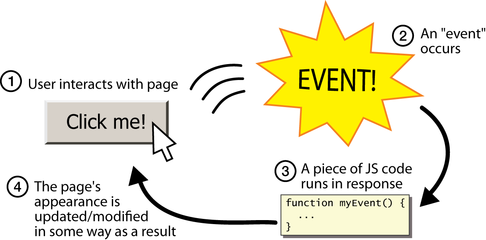
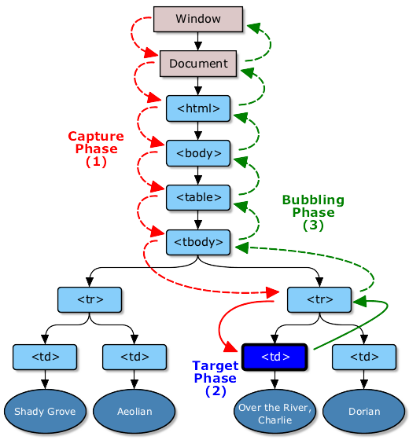

¿Qué es un evento en desarrollo web?
Un evento es cualquier acción que ocurre en la página web y que puede ser detectada mediante JavaScript para responder de forma interactiva.
Permiten crear aplicaciones web interactivas y dinámicas.

Elementos que intervienen
En el modelo de eventos intervienen tres elementos clave:
- Elemento: nodo HTML que genera el evento (button, input, form).
- Evento: acción que ocurre (click, input, submit...).
- Manejador: función JavaScript que responde al evento.
Ejemplo de un evento asociado a un botón:
<button id="btn">Haz clic aquí</button>
<script>
const btn = document.getElementById('btn');
btn.addEventListener('click', function() {
alert('¡Botón clickeado!');
});
Tipos de eventos frecuentes
Existen varios tipos de eventos en el modelo de eventos, pero algunos son más comunes:
- Mouse (interacción con el ratón): click, dblclick, mouseover, mouseout…
<button id="btn">Haz clic aquí</button>btn.addEventListener('click', function() {
// Código para responder al evento
});<input type="text" id="input">input.addEventListener('keydown', function(event) {
// Código para responder al evento
});<form id="form">
<input type="text" name="nombre">
<button type="submit">Enviar</button>
</form>form.addEventListener('submit', function(event) {
event.preventDefault(); // Evita el envío del formulario
// Código para validar y procesar el formulario
});window.addEventListener('resize', function() {
// Código para responder al cambio de tamaño
});Ciclo de vida de una aplicación basada en eventos
El ciclo de vida de una aplicación basada en eventos sigue varias etapas:
- Carga del DOM (Document Object Model) y scripts: el navegador carga la estructura HTML y los scripts JavaScript.
- Asignación de eventos: se asocian los manejadores a los eventos correspondientes.
- Propagación: capturing ➝ target ➝ bubbling.
- Ejecución del manejador: el navegador ejecuta el código asociado al evento.
- Actualización del DOM: se actualiza la estructura del documento según los cambios realizados.
1.Carga del DOM
Es importante asegurarse de que el DOM esté completamente cargado antes de asignar eventos a los elementos, para evitar errores. Esto se puede lograr utilizando el evento 'DOMContentLoaded' o colocando el script al final del body.
document.addEventListener('DOMContentLoaded', function() {
// Código para asignar eventos
});2.Asignación de eventos
Existen varias formas de asignar eventos a los elementos, pero la más recomendada es utilizando el método addEventListener, ya que permite asignar múltiples manejadores a un mismo evento y ofrece mayor flexibilidad.
const btn = document.getElementById('btn');
btn.addEventListener('click', function() {
// Código para responder al evento
});3.Carga del DOM
Es importante asegurarse de que el DOM esté completamente cargado antes de asignar eventos a los elementos, para evitar errores. Esto se puede lograr utilizando el evento 'DOMContentLoaded' o colocando el script al final del body.
document.addEventListener('DOMContentLoaded', function() {
// Código para asignar eventos
});Propagación
La propagación de eventos sigue un modelo de tres fases: Es útil para controlar el flujo de eventos en el DOM, por ejemplo, en la vida real, si haces clic en un botón dentro de un formulario, el evento de clic se propaga desde el botón hasta el formulario y luego al documento. Esto permite manejar eventos de manera eficiente y controlar su comportamiento mediante métodos como preventDefault() y stopPropagation().
- Capturing: el evento baja por la jerarquía del DOM desde el documento hasta el elemento objetivo.
- Target: el evento llega al elemento que lo generó.
- Bubbling: el evento sube por la jerarquía del DOM desde el elemento objetivo hasta el documento.
<div id="parent">
<button id="child">Haz clic</button>
</div>element.addEventListener('click', function() {
// Código para responder al evento
}, true); // Capturing
element.addEventListener('click', function() {
// Código para responder al evento
}, false); // Bubbling
4. Ejecución del manejador de eventos
Cuando un evento se dispara, el navegador ejecuta el manejador asociado al evento. Es importante que el código dentro del manejador sea eficiente y no bloquee la interfaz de usuario, para mantener una buena experiencia de usuario.
<button id="myButton">Haz clic</button> element.addEventListener('click', function() {
// Código para responder al evento
});5. Actualización del DOM
Después de que el manejador de eventos se ejecuta, es común que se realicen cambios en el DOM para reflejar la respuesta al evento. Esto puede incluir mostrar u ocultar elementos, actualizar contenido o modificar estilos. Es importante manipular el DOM de manera eficiente para evitar problemas de rendimiento.
<div id="content">Contenido original</div>element.addEventListener('click', function() {
const content = document.getElementById('content');
content.textContent = '¡Has hecho clic!';
});Buenas prácticas
- Separar HTML, CSS y JavaScript: mantener el código organizado.
- Usar addEventListener: para asignar eventos de forma flexible.
- Evitar eventos inline: no usar atributos como onclick en el HTML.
- Optimizar manejadores: evitar código pesado dentro de los manejadores de eventos.
- Controlar la propagación: usar preventDefault() y stopPropagation() cuando sea necesario.
- Usar delegación de eventos: para manejar eventos en elementos dinámicos.
Delegación de eventos
La delegación de eventos es una técnica que consiste en asignar un manejador de eventos a un elemento padre en lugar de a cada elemento hijo individualmente. Esto es especialmente útil cuando se tienen muchos elementos dinámicos, ya que permite manejar eventos de manera eficiente sin necesidad de asignar un manejador a cada elemento.
<ul id="list">
<li>Elemento 1</li>
<li>Elemento 2</li>
<li>Elemento 3</li>
</ul>const list = document.getElementById('list');
list.addEventListener('click', function(event) {
if (event.target && event.target.nodeName === 'LI') {
// Código para responder al clic en un elemento de la lista
}
});Componentes de una aplicación web

Una aplicación web está compuesta por tres componentes principales:
Los navegadores, por convenio, interpretan el código HTML, CSS y JavaScript para construir la interfaz visual y el comportamiento de la aplicación.
- HTML: estructura.
- CSS: estilos y apariencia.
- JavaScript: comportamiento y validación dinámica.
Validación dinámica
La validación se realiza en tiempo real, sin recargar la página, mostrando mensajes de error y guiando al usuario de forma inmediata.
Ejemplo de validación de un formulario de registro:
<form id="registerForm">
<input type="text" id="username" name="username" placeholder="Nombre de usuario">
<input type="email" id="email" name="email" placeholder="Correo electrónico">
<input type="password" id="password" name="password" placeholder="Contraseña">
<button type="submit">Registrar</button>
</form>const form = document.getElementById('registerForm');
form.addEventListener('submit', function(event) {
event.preventDefault(); // Evita el envío del formulario
const username = document.getElementById('username').value;
const email = document.getElementById('email').value;
const password = document.getElementById('password').value;
let errors = [];
if (username.length < 3) {
errors.push('El nombre de usuario debe tener al menos 3 caracteres.');
}
if (!email.includes('@')) {
errors.push('El correo electrónico no es válido.');
}
if (password.length < 6) {
errors.push('La contraseña debe tener al menos 6 caracteres.');
}
if (errors.length > 0) {
alert(errors.join('\\n'));
} else {
alert('¡Registro exitoso!');
}
});Ventajas de validar sin recargar
- Mejora la experiencia del usuario.
- Interacciones más rápidas.
- Evita pérdida de datos en formularios.
- Feedback instantáneo.
Prueba y depuración
- Probar campos vacíos y verificar errores.
- Introducir datos incorrectos.
- Comprobar mensaje de éxito.
- Observar actualización sin recarga.